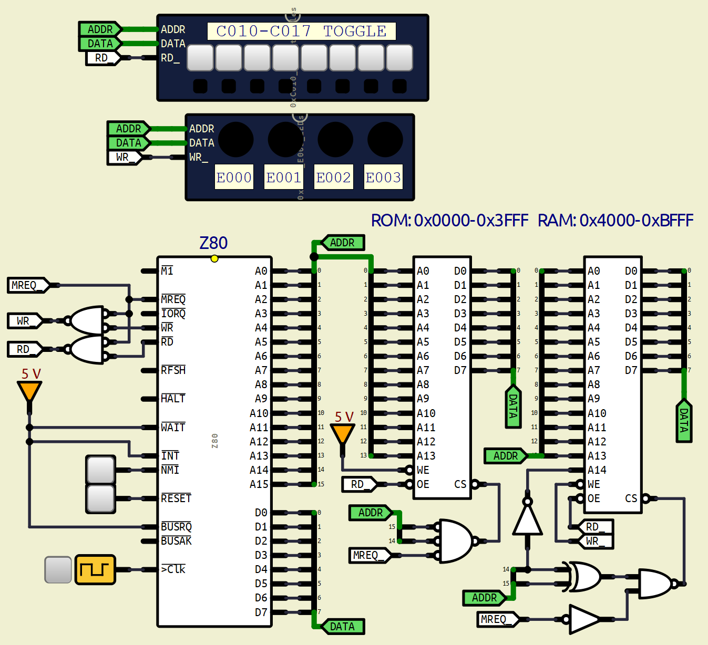

Problem:
Decoding Device
- Update Repository: Use GitHub Desktop to update
BareMetal-C (Fetch origin → Pull).
- Target Code: You are assigned the following 8-bit binary value:
- Input Logic: Write a C program that reads the toggle switches
mapped to
0xC010–0xC017.
- Bit Mapping: Map the leftmost bit of the code to
0xC010 and
the rightmost bit (LSB) of the code to 0xC017.
- Output Logic: If the switch inputs match the target code,
turn ON the LED at
0xE000.
Otherwise, turn it OFF.
- Implementation: Complete the existing source file
at
BareMetal-C/code/homework03/match_code.c.
- Verification: Load your compiled
.bin into
hw3.sim and verify it behaves as expected.
- Submission: Submit your final
.c file.
Appendix:
Click to see hw3.sim
